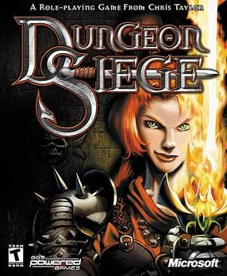

Dungeon Seige (PC)



Developed in a state of perpetual hype, Dungeon Siege is an fantasy action/RPG in the mould of Diablo II, with the focus definitely on the action. Despite its flawless 3D engine and perfect interface, Dungeon Siege nonetheless ends up wanting in other areas.
With Dungeon Siege, developers Gas Powered Games have created a totally realised, convincing 3D world - it could be said that this is the best looking engine produced for this type of game so far. All of the characters and monsters are exquisitely detailed and animated, and everything from the mightiest dragon to the tiniest frolicking fairy all look superb. The transition from underground dungeons to wide open forests is seamless, and all large objects fade out as they cross your field of vision, so the camera angle is never obscured. The camera controls can be tilted, swayed, and zoomed in and out as much as you like, allowing the action to be viewed from almost any angle. While they are initially difficult to control and the constant adjusting makes the action confusing at times, the controls are intuitive and in no time you will be manipulating them without difficulty.
The most innovative feature of the game engine is the lack of loading times breaking up the action; the fantasy land in which game is set is consistently streamed off the hard drive, and never split into zones or territories. It definitely makes for a more immersive experience, really heightening the sense of your party setting off for adventure across a fantasy land, and not merely loading up the next level.
The fantasy land in which the quest is set is visually extraordinary, and the setting of Dungeon Siege is the game’s strongest point. Containing seemingly unlimited amounts of beautiful scenery, the environments are lovingly detailed and richly diverse in their locations, and it’s a credit to the game that the quality of the visuals continue to surprise. Views overlooking sweeping valleys and vistas, rickety bridges crossing bottomless ravines, dungeons that seem to descend down into the ground forever, waterfalls, crypts; every type of fantasy cliché that you could possibly imagine. You descend into the Glitterdelve mines from a green country side and emerge hours later in the snowy Alps; the Rock-Caves are also particularly impressive, with rocky pools to wade through, geysers sprouting gas, and glowing crystals jutting out of the ground.
The hugely refined interface of Dungeon Siege is another of the game’s strongest points; hot-keys can be assigned for every possible command, there is a quick sort button for the inventory, the game can be paused at any time to issue commands, and you can adjust the formation in which your party fights and how they attack. Although with up to 8 characters to control at a time, way too much time is spent sorting through your inventory.
In terms of gameplay, Dungeon Siege has all of the cliches and conventions of the action/RPG genre characterised most by Diablo II. The action is relentless as you take on wave after wave of fantasy beasts, and like Diablo II it is surprising how addictive the monotonous non-stop action can become. As the bad guys grow bigger as you progress through the game, the combat itself grows increasingly frantic and intense - sometimes to the point that you have no choice but to flee. Your team members are never too difficult too control, and can mostly act independently and fend for themselves, taking the focus off any strategy and putting it instead on all-out combat, action, and fun.
But behind all the hack-and-slash action of Diablo II, one of the main joys was customising your character to your liking: developing his unique skills, and fitting him out with all of the best unique and special items that you could find. Special items and character customisation are perhaps the areas where Dungeon Siege is left wanting the most: character development is quite restrictive for an RPG, and there are no special skills that you can develop to heighten the uniqueness of your characters. Further still, the special items are disappointing and boring, lacking in personality to say the least. Dungeon Siege also skimps in plot - rather than being an engrossing story involving interaction with NPC’s which have an effect on the story’s outcome, Dungeon Siege’s plot is hugely linear and barely there.
Ultimately, while the graphics, interface, and action of Dungeon Siege are almost flawless, the gameplay lacks the depth of other RPG’s. If you come looking for a Diablo-esque hack-fest and nothing else, the you won’t be disappointed, and the amount of fun to be had almost completely redeems Dungeon Siege of all its flaws. But if you want an RPG with depth and storyline, then look at any of the other excellent titles released recently such as Neverwinter Nights or Morrowind.
7 out of 10